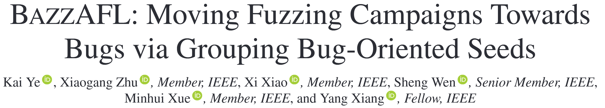
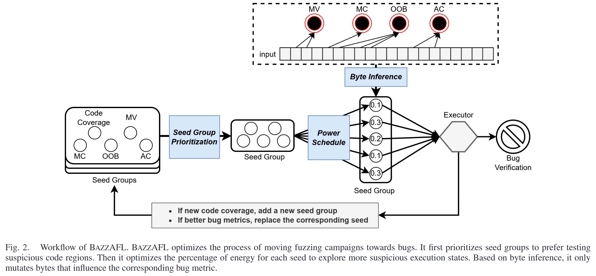
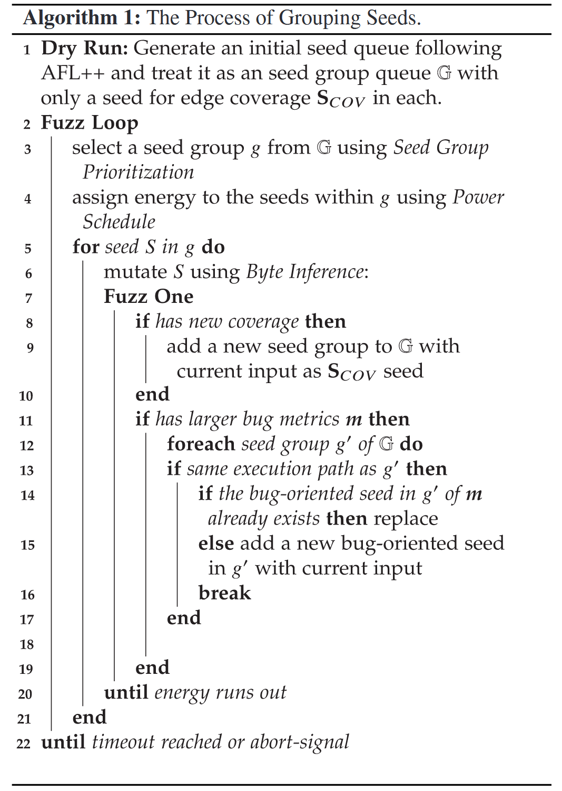
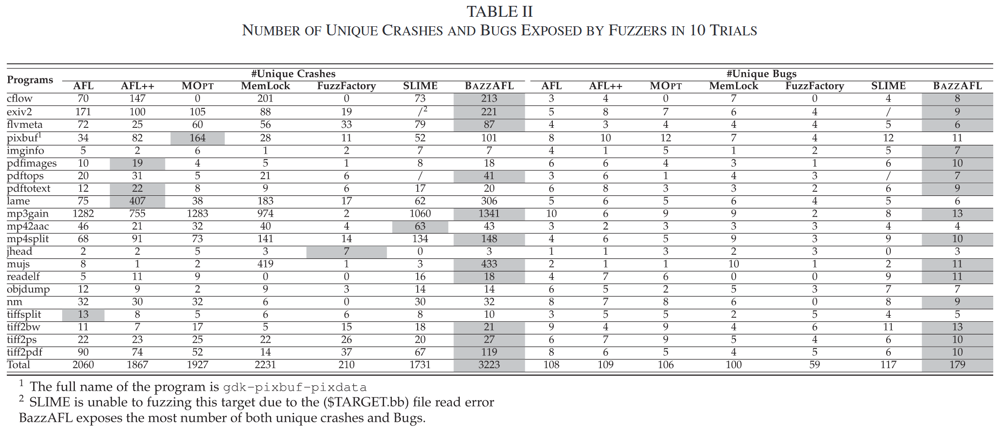
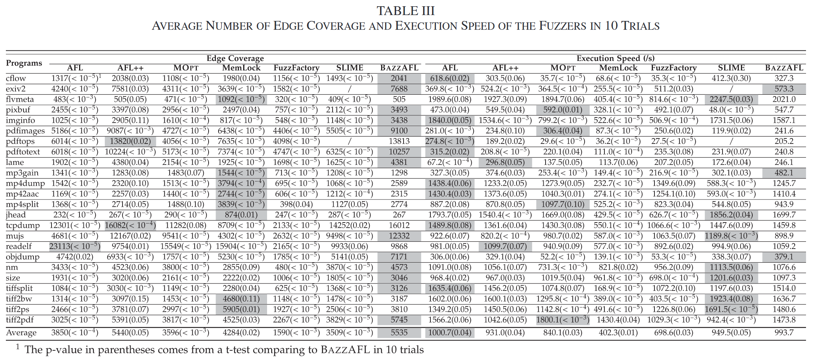

BAZZAFL: Moving Fuzzing Campaigns Towards Bugs via Grouping Bug-Oriented Seeds [TDSC 2025]

基于覆盖率引导的灰盒模糊测试 (CGF) 旨在将模糊测试活动引导到能够触发漏洞的执行路径上. 这个过程分为两个步骤, 包括到达可疑代码区域并探索其执行状态. 许多 CGF 方法提出了高效到达可疑代码区域和个体执行状态的方案, 但未能有效探索复杂的执行状态. 挑战在于如何探索执行状态, 使得模糊测试能够检测到多种类型的漏洞, 同时保持代码覆盖率. 为了解决这个问题, 作者提出了 BAZZAFL 来研究代码覆盖率和多种类型的漏洞. BAZZAFL 的核心在于维护一组种子群体, 其中每个种子保存一个目标上的最佳性能. 通过种子群体, BAZZAFL 基于多目标优化优先探索最可能包含漏洞的代码区域, 并根据香农熵自适应地在群体中的种子之间分配能量. 同时, 在变异过程中, BAZZAFL 倾向于变异能够改变执行状态的字节.
Methods

Seed Group Prioritization
对于相同的代码区域, 一个种子无法行使最有可能触发所有类型漏洞的执行状态. 相反, 包含多个种子的种子群体可以行使所有类型漏洞的最可疑执行状态. 五个种子被收集以构建一个种子群体. 相同群体中的种子具有相同的执行路径, 但群体中的某个面向漏洞的种子在漏洞度量上表现优于其他种子. 例如, 如果某个种子 s 发现了新的覆盖 (边), 作者将创建一个新的种子群体 g, 并将 s 设置为基本种子. 请注意, 此时, 种子群体中只有一个种子. 稍后, 在模糊测试过程中, 如果 BAZZAFL 发现一个与 g 中的种子具有相同执行路径并在某个漏洞度量上表现更好的种子, BAZZAFL 会将其作为面向漏洞的种子加入种子群体 g (如果已经存在则替换) . 在优先级排序过程中, 如果 g 在多个度量上优于其他种子群体, 它将根据作者的种子群体优先级排序获得更高的优先级. 算法1展示了 BAZZAFL 的基本流程.

算法 1 中的其他四个面向漏洞的种子是为四种不同类型的漏洞设计的. 选择这四种漏洞是因为它们是通过模糊测试发现的常见漏洞. 值得注意的是, 如果其他类型的漏洞能够量化其触发的可能性, 作者也可以添加更多的漏洞类型. 漏洞是复杂且难以预测的, 但某些漏洞发生在满足特定条件时, 即漏洞特征. 基于种子群体, BAZZAFL 优先探索包含漏洞的代码区域并探索执行状态. 由于过多的种子会降低模糊测试的性能, BAZZAFL 会在输入在漏洞度量上表现更好时替换种子.
漏洞触发的可能性度量
边覆盖 (Edge Coverage) ：作者设置两个度量, 执行速度 (m1) 和种子覆盖的边数量 (m2)
内存违规漏洞 (Memory Violation Bug, MV) ：作者使用内存访问操作的数量作为度量 (m3)
越界漏洞 (Out-of-bounds Bug, OOB) ：作者使用一个比例来衡量内存访问距离边界的远近 (m4) . 该比例定义为 r = cur / max, 其中 cur 是内存块中的当前索引, max 是最大大小.
内存消耗漏洞 (Memory Consumption Bug, MC) ：消耗更多内存的输入比消耗较少内存的输入更有可能触发MC漏洞. 为了衡量一个种子在MC漏洞方面的质量, 作者使用分配内存的大小作为度量 (m5) .
算法复杂度漏洞 (Algorithmic Complexity Bug, AC) ：导致异常多基本块执行的输入更有可能触发此漏洞. 为了衡量一个种子在AC漏洞方面的质量, 作者使用执行的基本块数量 (m6) .
将多个度量的种子群体选择问题建模为多目标优化问题, 由于模糊测试逐渐向漏洞靠拢, 作者使用非支配排序方法来为不同的轮次找到多个帕累托最优解. 作者的多目标问题的目标是优先选择所有种子群体G中的一个子集G, 使得具有更好度量值的种子群体会被首先选中.
非支配排序方法：多目标优化的常用解决方案是计算帕累托前沿. 帕累托前沿是一个非支配解, 定义为：
其中, 当且仅当满足以下条件时, 称 g' 支配 g
对于目标 m1 (执行速度), 越小越好；对于其他目标, 越大越好. 简而言之, 只有当种子在所有 6 个度量上都比另一个种子差时, 作者才认为该种子被支配. 在模糊测试的背景下, 帕累托前沿是动态变化的, 因为每个种子群体中的度量值在模糊测试过程中发生变化. 因此, 作者使用非支配排序进化方法来计算动态变化的帕累托前沿. 基本上, 每个种子群体都会被分配一个等级, 初始值为 0. 在计算帕累托前沿的过程中, 如果 g′ 支配 g, 则 rank(g) 增加1. 因此, 帕累托前沿包含具有最小等级的种子群体. 对于不同的模糊测试活动, 最小等级的值可能会发生变化, 从而导致帕累托前沿的变化. 对于每次模糊测试活动, BAZZAFL 会优先选择最小等级的种子群体.
然而, 在某些情况下, 这六个度量无法同时满足, 导致没有优先选择的种子群体. 在这种情况下, 作者放宽了多目标问题中的约束条件. 作者优先移除那些触发漏洞的可能性比其他度量小的度量. 首先, 作者删除度量 m1 (执行速度), 因为作者的最终目标是发现漏洞, 而且它与度量 AC 和 MC 部分冲突. 然后, 如果删除 m1 后仍无法选择赢家群体, 作者将删除度量 m2 (覆盖的边数量) . 接下来, m6 (执行的基本块数量) 将是第三个被删除的度量, 因为 AC 发生的可能性低于其他漏洞类型. 最后, 作者将删除度量 m3 (内存访问操作的数量), 因为 OOB 比其他类型的内存违规漏洞更可能发生. 作者至少保留两个度量, 以保证问题仍然是一个多目标问题.
Power Schedule
BAZZAFL通过将模糊测试理解为一个学习过程, 并基于香农熵计算能量, 从而优化功率调度. 具体来说, 如果一个种子能够揭示更多程序的信息, 那么这个种子将分配更多的能量. 对于边覆盖, 信息是种子变异所发现的边. 对于四种漏洞, 信息是它们通过种子的变异所增加的度量值.
其中, 是从种子 t 生成的输入属于 物种 (species) 的概率, 估计公式为 , 其中 是从种子 t 生成且属于 的输入个数, n 是总输入数. 最后种子群体的能量用熵比例加权平均计算. 每个种子的加权平均的权重 (比例) 计算公式为:
Byte Inference for Mutation
为了有效地将模糊测试活动引导到能够触发漏洞的执行状态, BAZZAFL 推测能够改变与漏洞相关的度量值的字节. 字节推断的基础是观察到种子中的一部分字节与漏洞度量相关. 作者在确定性阶段考虑字节推断的变异器, 包括位级、字节级和字级的变异器. 具体来说, 作者选择那些可以确定变异字节位置的变异器, 例如 FLIP_BIT 和 SWAP32. 作者不考虑在破坏性变异阶段进行字节推断. 对于每个面向漏洞的种子, Fig. 2 中的字节推断更有可能变异与其目标漏洞相关的字节. 需要注意的是, 由于确定性变异器的低效性, 作者只对一个种子 (用于边覆盖) 执行字节推断, 然后使用该结果变异种子群体中的其他面向漏洞的种子. 至于模糊测试的其他阶段, 作者主要使用非确定性变异器进行测试.
BAZZAFL 通过观察字节变异的结果来建立输入字节与漏洞度量之间的关系. 它首先记录变异字节的位置, 然后根据漏洞度量的变化确定变异位置是否与相应的度量相关. 例如, 当作者同时改变种子 a 和 b 的字节时, 某个漏洞度量发生了变化. 然后, 作者单独将 a 和 b 恢复到它们的原始值. 如果 a 的变化导致漏洞度量的变化, 而 b 的变化不影响漏洞度量, 那么可以推断 a 是相关的, 而 b 是不相关的. 假设一个字节的变化通过双重检查 (比较变异前后度量值) 导致了漏洞度量值的变化, 那么该字节与漏洞度量之间的关系得以确认. 例如, 如果一个字节的变化导致了 MC 度量值的变化, BAZZAFL 将记录该字节为与种子 相关的字节. 当变异一个针对 MC 设计的种子 时, BAZZAFL 更有可能变异与 MC 漏洞相关的字节.
由于同一群体中的种子具有相同的执行路径, 面向漏洞的字节推断在种子之间是共享的. 例如, 如果一个面向 MC 的种子的变异发现了一些与 AC 相关的字节, 这些字节将被记录到面向 AC 的种子中. 字节推断的使用还可以减少种子群体中变异的开销. 由于种子群体中的种子执行相同的执行路径, 它们的变异有很高的可能性会重叠, 即不同种子的变异可能会检查相同的执行状态. 因此, 当面向漏洞的种子专注于它们各自与漏洞相关的字节时, 它可以减少字节变异的开销.
Evaluation

